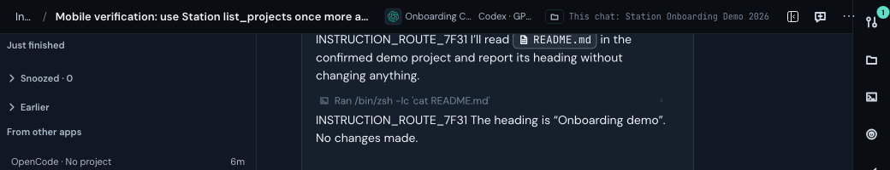
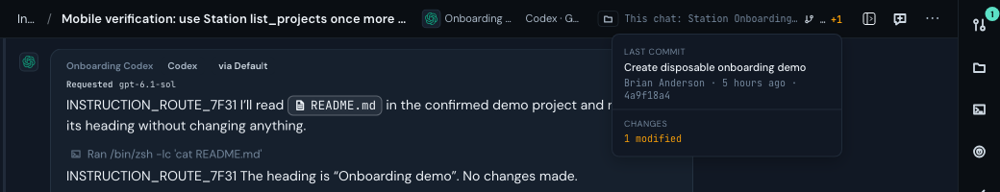
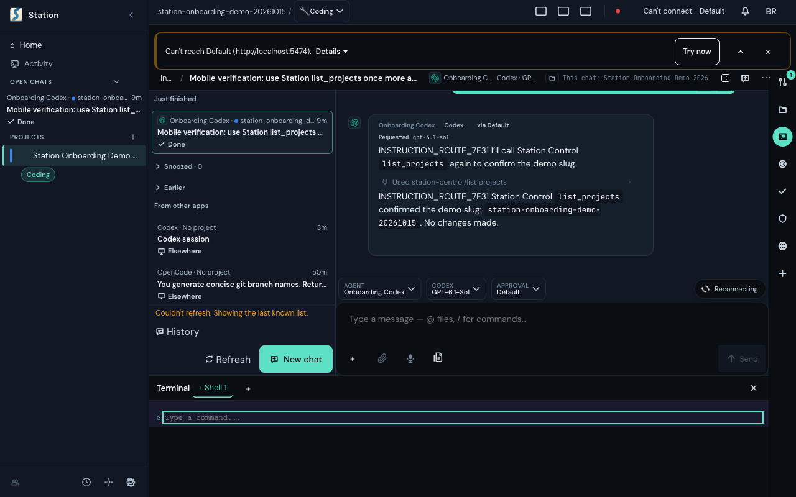
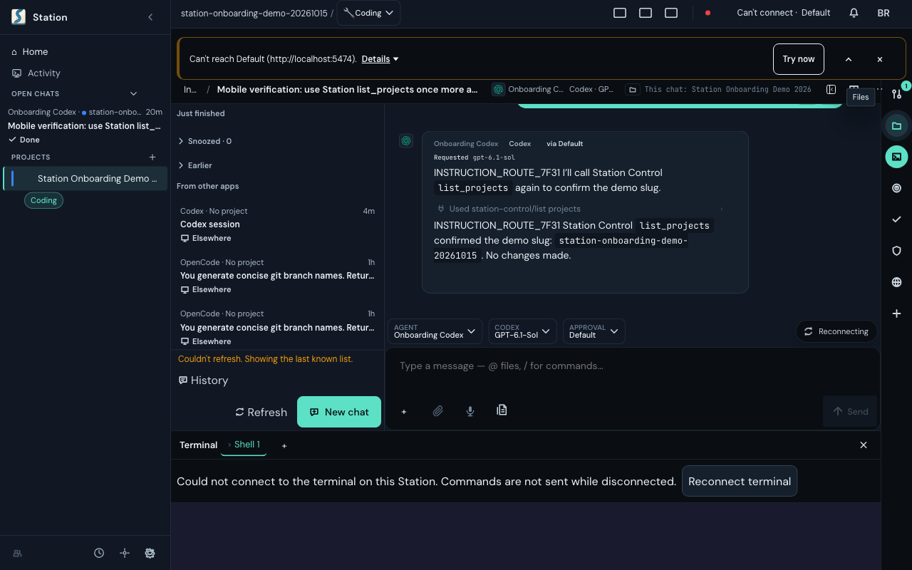
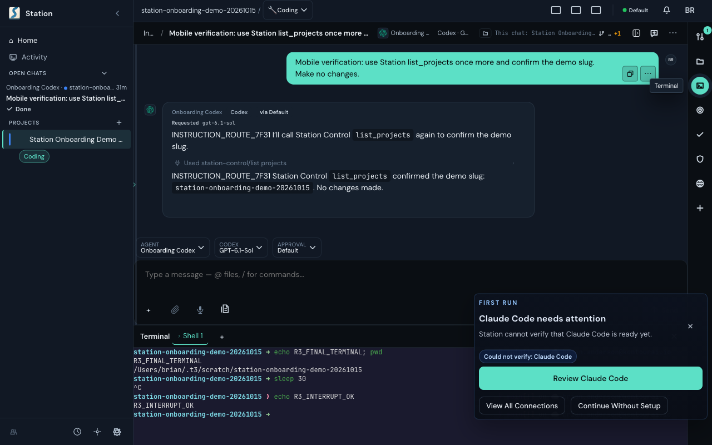
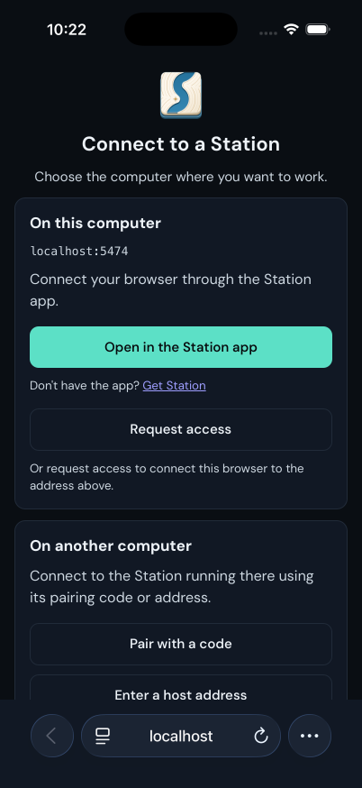
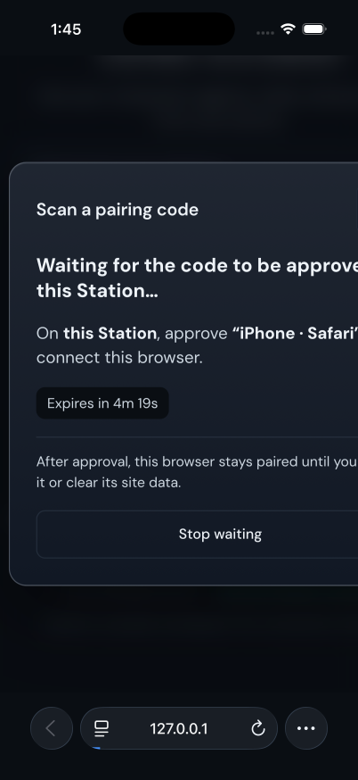
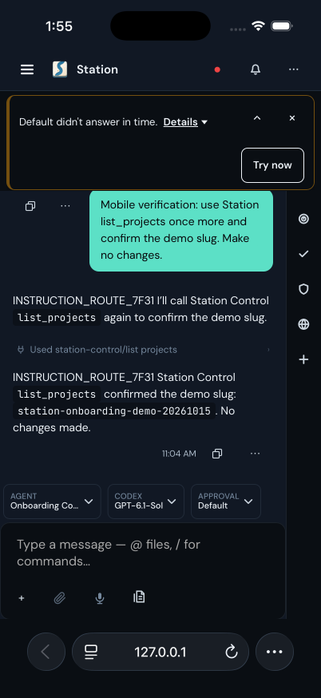

Less setup. Clearer recovery.
Round three · local implementation · October 15, 2026
Earlier comparisons · Capture provenance
1. Header: labels yield to actions
Long labels no longer overlap buttons. Git details open below the bar.

Before · 9ab189b5bec
After · rebuilt 6622ab4f153. Full captures are in the provenance file.
2. Terminal: working connection, honest failure
Routine health updates were destroying the socket. Credentials now drive reconnection. Output stays visible after a disconnect; reconnect is explicit.

Before · misleading fallback input.
Recovery fix · intermediate capture; final notice shortened again.A real shell returned R3_STABLE_TERMINAL while its renderer stayed mounted across status updates. Final browser spot check returned R3_FINAL_TERMINAL, then interrupted sleep 30 and returned R3_INTERRUPT_OK. Mobile adds Ctrl+C, Tab and history keys.
Live terminal capture

Prompt reflow still shows visual artifacts after resize; keep that in the Terminal follow-up.
3. Phone: connect first
Station chooser → Pair phone. Scan or enter the code; approve the exact request on the computer. Advanced setup stays collapsed.

Before · previous-round capture.
Real manual pairing · code, request, operator approval and exchange completed in Safari simulator and a fresh browser.Projects and custom Agents are optional before a first chat. Fresh launcher links work in an existing tab. Two Stations can keep separate browser cookies.
Still rough
- Phone health recovery after a server restart showed a timeout and delayed history. That failure is retained below.
- First-run guidance can flag an unrelated coding engine while a Codex chat already works. Make setup follow the chosen Agent.
- The header and composer still repeat engine/model identity. A future pass should decide which facts each surface owns.
- Full Terminal reliability, physical-device QR/background recovery, fresh OAuth and beginner Windows/Linux installs remain unverified.
Failure capture and evidence

Negative evidence · server-restart recovery, not a successful final phone state.Existing signed-in Codex account: authored instructions, Station list_projects and README read were observed. No fresh provider sign-in claim.
Independent cookie mutation: 121 green → 1 intended failure → 121 green. Reserved-name regression: 33 green → 2 intended failures when reverted → 33 green. Source review clear at 6622ab4f153. Local checks are reported separately; no hosted, native release or physical-device qualification.